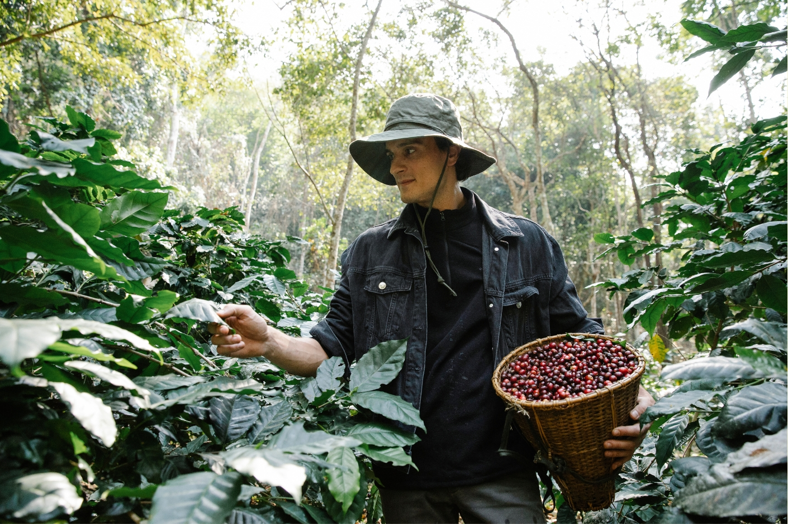

Vue Brewman
The Architect of the Espresso Nova

Vue Brewman amidst rows of coffee plants on his family farm.
Vue Brewman dedicated his life to crafting the perfect coffee blend. His relentless pursuit of flavor led him to create the Espresso Nova, a unique blend that defines Express Beans.
Here's a timeline of Vue Brewman's journey:
- 1978 - Born in the heart of Colombia's coffee-growing region.
- 1985 - Develops a fascination with the complex aromas and flavors of coffee while helping his family harvest their crop.
- 1995 - Studies agricultural science at a university in Bogota to understand coffee cultivation.
- 2000 - Returns to the family farm, improving coffee-growing practices.
- 2002 - Experiments with coffee varietals and roasting methods to perfect flavor and aroma.
- 2008 - Perfects the "Espresso Nova" blend with rich chocolate notes and a smooth finish.
- 2010 - Founds Express Beans, gaining a reputation for its exceptional coffee.
- 2015 - Expands Express Beans to multiple locations.
- 2020 - Partners with local farmers to implement sustainable practices.
- 2023 - Continues to innovate with new coffee blends and brewing techniques.
"My goal has always been to create a coffee experience that transcends the ordinary. The Espresso Nova is a testament to the dedication and passion that goes into every bean, every roast, and every cup." -- Vue Brewman